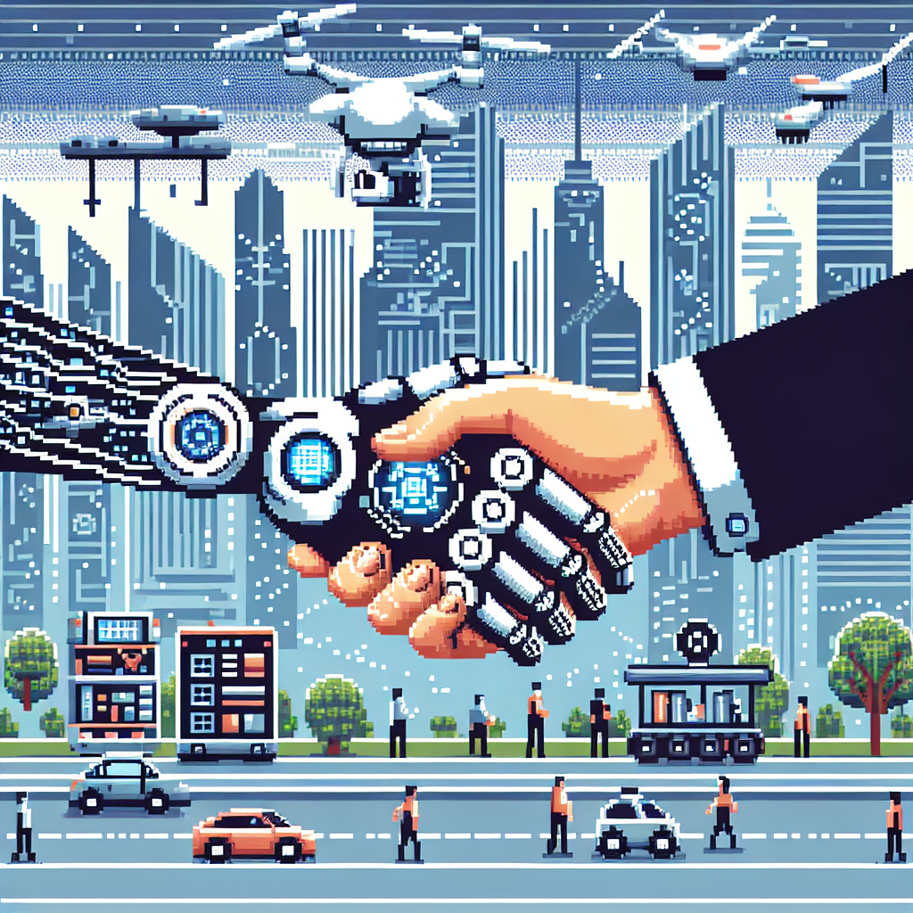

AI will be popularization in near future
In recent years, we have witnessed significant advancements in the field of artificial intelligence (AI). From self-driving cars to virtual assistants, AI has become an integral part of our lives. And I believe that AI will only continue to grow in popularity in the near future.
One area where AI is already making a big impact is in the field of healthcare, particularly in radiology. AI algorithms have shown great potential in assisting radiologists in diagnosing diseases and identifying abnormalities in medical images. With the ability to analyze large amounts of data quickly and accurately, AI has the potential to improve patient outcomes and reduce healthcare costs.
But it's not just in healthcare where AI is making waves. AI is being used in various industries, from finance to manufacturing, to improve efficiency and productivity. As businesses realize the potential of AI to automate tasks and make data-driven decisions, the demand for AI professionals will only continue to grow.
Furthermore, AI is becoming more accessible to individuals and small businesses. Platforms like OpenAI have made it easier than ever to develop AI-powered applications. With the availability of online courses and resources, anyone can now learn AI and develop their own AI projects.
In the near future, I believe that AI will become even more integrated into our daily lives. From smart homes that can anticipate our needs to personalized virtual assistants that can help us manage our tasks, AI will become an essential part of our routines.
However, with the rise of AI comes the need for ethical considerations. As AI becomes more powerful, we need to ensure that it is used responsibly and in a way that benefits society as a whole. The potential risks and challenges associated with AI, such as privacy concerns and job displacement, should be carefully addressed.
In conclusion, AI is set to become increasingly popular in the near future. Its applications in various industries, including healthcare, and its accessibility to individuals and small businesses make it a promising technology. However, it is important to approach AI with caution and ensure that it is used ethically and responsibly.